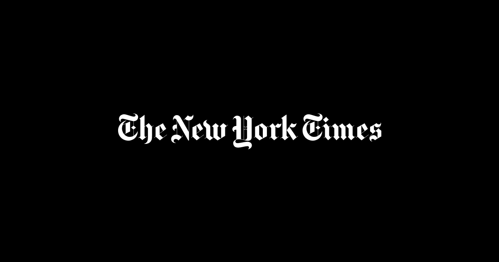
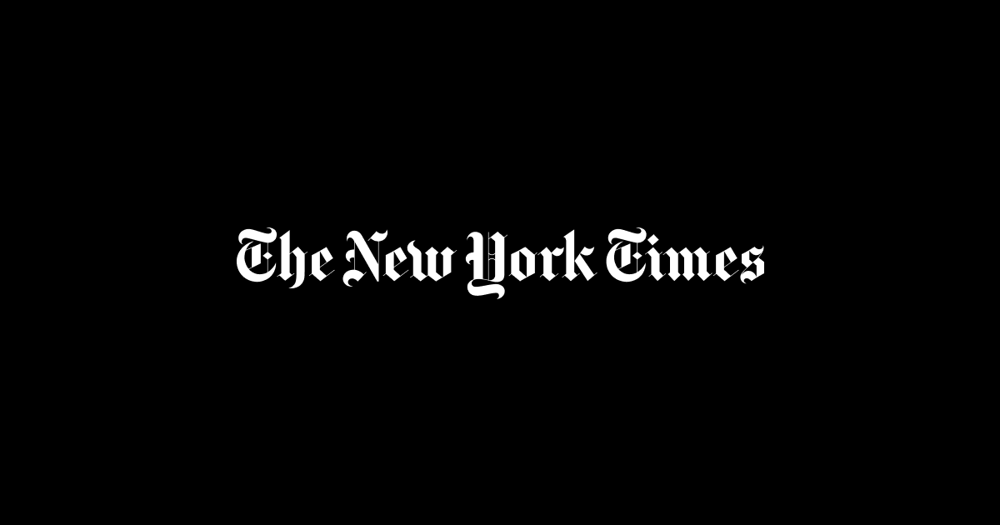
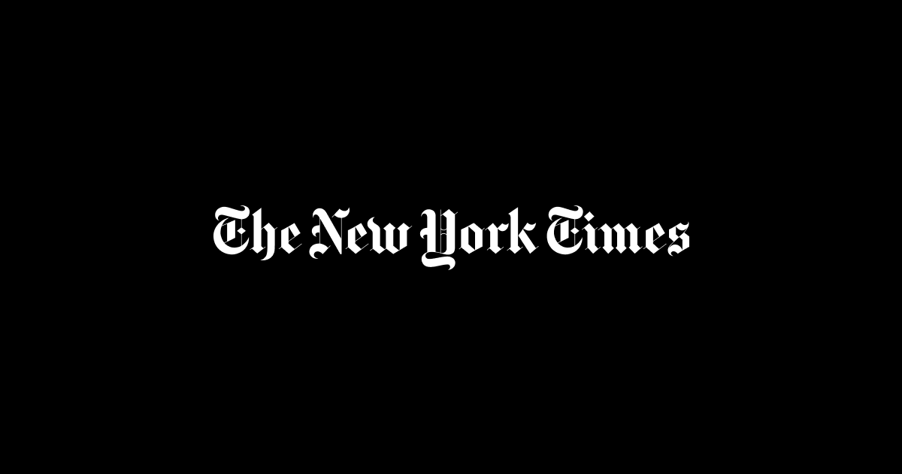
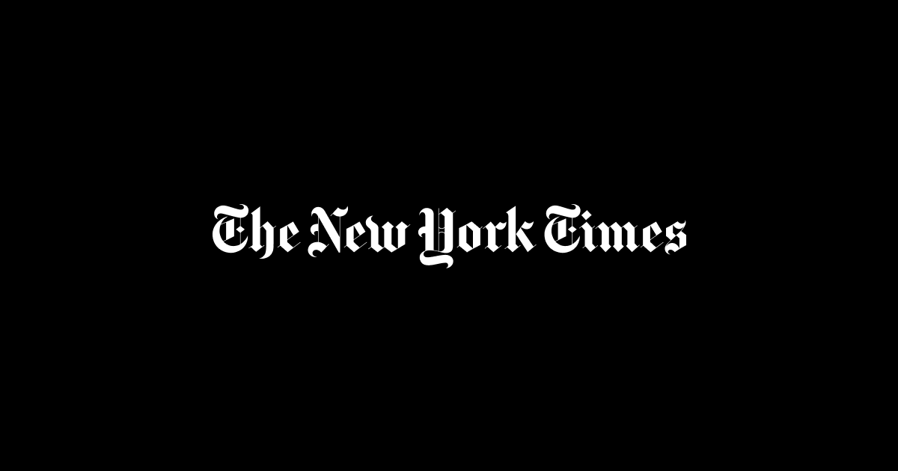

o proposito do new work times era transmitir e mostrar noticias do mundo inteiro de uma forma simples,objetiva e digital
a fim de substituir aos poucos a versao impressa
e acompanhar os tempos digitais
sim,o site teve mudanças significativas,com layout,fontes,organizaçao e ate anuncios,a fluidez do site mudou
ele era muito compactp muito texto junto,diversos links que sempre te levam para
algum lugar dando somente um pedaço da noticia.
se entramos em um site de noticias queremos ter um acesso imediato a noticias
ficar clicando em link toda hora e enjoativo e pouco pratico
a mudança no desing do site e muito notavel com o tempo fica mais atrativo e
chama atençao do publico,nao e somente letras pretas em uma parte branca,o formato ao redor dos conteudos de tabela
tambem foi uma mudança evolutiva pra tornar a pagina mais atrativa,inicialmente parecia uma copia de um jornal literalmente fisico em uma pagina web
no começo do new york times ,o site tinha uma serio problema em organizaçao e prioridade de texto.
os textos nao tinham uma cor alem do inegrito para provocar uma sensaçao de alerte ou emergencia
trazendo o usuario a ficar mais na pagina
ha tantas coisas que ficamos saturados ao somente olhar a pagina
bate uma preguiça ou cansaço de tantas letras e muitos anuncios a redor da pagina parece que e um outtdor de internet
hoje em dia o new yotk times ainda nao se tornou atartivo
meio que quer manter esse aspecto do passado que naoe atraente para os jovens de hoje em dia,que gostam de atrativos
o site nao tem interaçao nenhuma,nao tem
acessibilidade para cegos ouvir o audio da materia escrita continuando a se manter no passado
alem do logo que em qualquer ano nao teve um auteraçao ou versao diferente